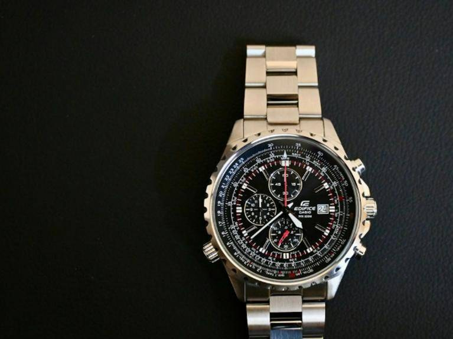
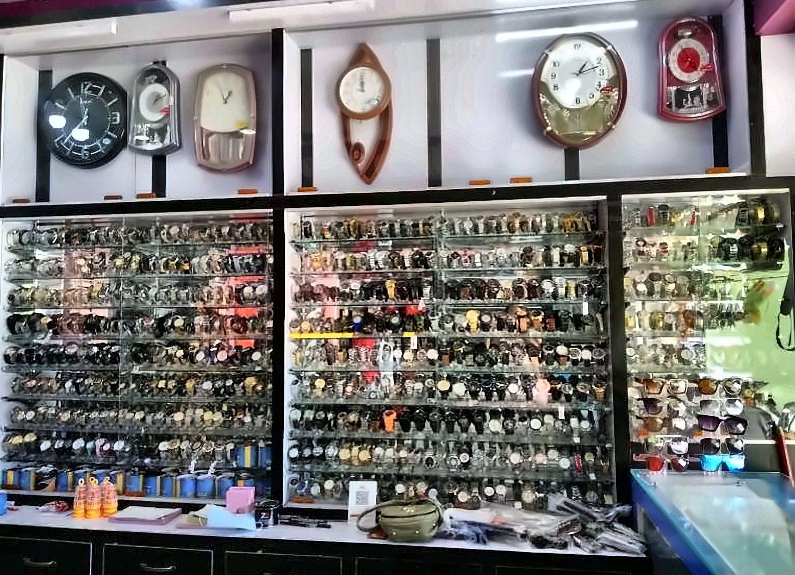
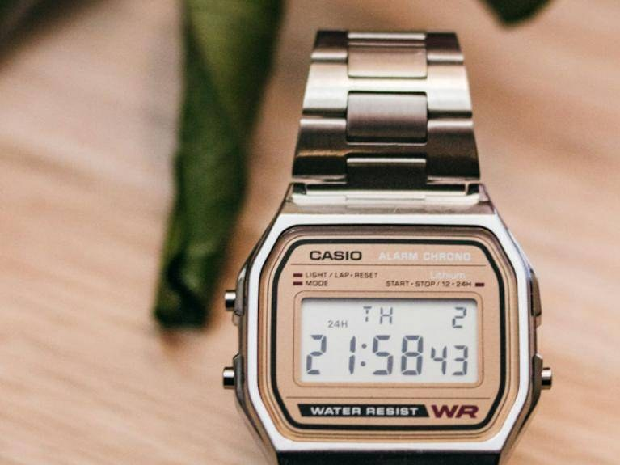
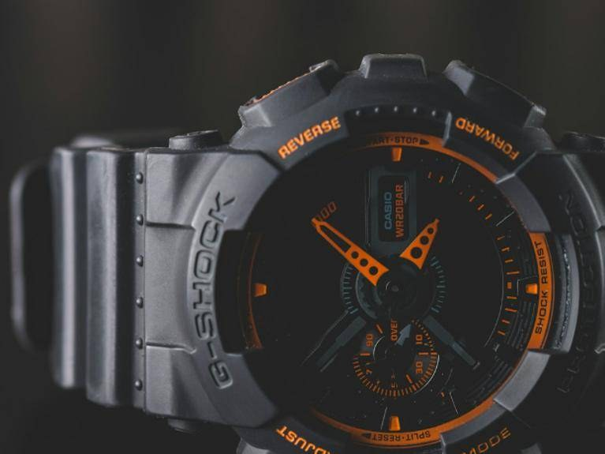

New watches
Choose from a wide selection of quality watches in the shop.
- A warranty on every watch we sell
- See and try watches in person
- Call ahead to ask if a model is in stock
Bus Park Road · Dhangadhi
Deepak Watch Center sells quality watches, every one with a warranty, and repairs almost every kind of watch, from modern designs to vintage classics.


About the shop
For more than 30 years, people in Dhangadhi have come to us to buy a watch and to bring it back when it needs care.
We stock a wide selection of quality watches, and every one is backed by a warranty. We also repair almost all types of watches, from modern designs to vintage classics.
Our focus is on precision, good craftsmanship and happy customers.
What we do
Two services, done carefully for over 30 years.

Choose from a wide selection of quality watches in the shop.

We repair almost all types of watches, old and new.
Brands we carry
Stock changes often, so call or message us to check a model before you visit. Tap a photo to see it larger.
From G-Shock to classic Vintage digitals and Edifice chronographs.
Dress watches and chronographs from Titan.
Steel and two-tone dress watches, ladies' watches and digital sports watches.
Chronographs and ladies' watches with crystal bezels.
Ladies' fashion watches with crystal and gold-tone bracelets.
Fashion watches with enamel bracelets and crystal bezels.
Naviforce, Skmei, Bolano, Focus and Millennium photos were supplied by Deepak Watch Center. Casio and Titan photos are examples from Unsplash, not of our own stock; photographers are credited in our terms.
Repairs
Simple and in person.
Visit the shop on Bus Park Road with your watch.
We look at the watch, tell you what it needs, and agree the cost and time with you.
Collect your watch from the shop when it is ready.
Reviews
Rated 4.4 out of 5 by 7 customers on Google (November 2026).
Read reviews on Google (opens in a new tab)Questions
Yes. Every new watch we sell comes with a warranty. The terms depend on the watch and are explained when you buy it.
Yes. We repair almost all types of watches, from modern designs to vintage classics. Bring the watch to the shop and we will check it.
On Bus Park Road, Dhangadhi, Kailali. On Google Maps, search for "Deepak Watch Center" or use the Plus Code PH3F+WJ Dhangadhi.
Please check our Google Maps listing (opens in a new tab) for today's hours, or call 984-8420742.
Yes. Call 984-8420742 or 091-525060 before you visit.
Visit us
Ask about a watch, a repair or stock before you visit. Send photos of your watch if it needs fixing.
Chat on WhatsApp (opens WhatsApp in a new tab)